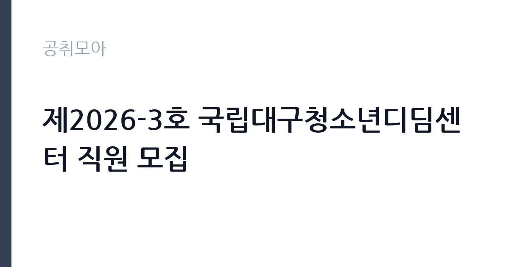

[공공기관] 제2026-3호 국립대구청소년디딤센터 직원 모집
한국청소년상담복지개발원 · 대구 · 마감 2026-11-13 (D-15) · 출처 잡알리오

한눈에 보는 모집 조건
| 기관 | 한국청소년상담복지개발원 |
|---|---|
| 공고명 | 제2026-3호 국립대구청소년디딤센터 직원 모집 |
| 고용형태 | 공무직 |
| 근무지 | 대구 |
| 게시일 | 2026-10-29 |
| 마감일 | 2026-11-13 (D-15) |
지원자격, 이렇게 읽으세요
- 공무직 일반직 4급_일반행정분야(정보보안) : 1명
- 공무직 일반직 5급_상담교육분야 : 1명
공무직 근로자는 공무원이 아니라 근로기준법이 적용되는 근로자이지만 기간의 정함이 없는 무기계약으로 채용되는 경우가 많아 정년까지 근무가 가능합니다. 채용은 공무원 시험과 달리 기관의 자체 전형으로 진행되고 인사 규정과 임금표를 적용받습니다. 이번 공고는 한국청소년상담복지개발원이 직접 진행하는 자체 전형입니다. 미화 직무는 학력과 경력을 엄격하게 보지 않는 대신, 실제 근무 가능성과 건강 상태를 확인합니다. 무거운 장비를 들고 계단과 화장실을 오가야 하므로 허리와 무릎 상태가 실질적인 조건입니다. 채용 인원이 1명인 경우가 많아 경쟁이 몰릴 수 있고, 근무지 거주자나 관련 경력자를 우대하는 조항이 붙기도 합니다. 접수 방식이 우편이나 방문인 경우가 있어 온라인 접수만 생각하면 일정을 놓칩니다. 국가공무원법상 결격사유 확인 절차가 있습니다. 제출서류는 공고문에 적힌 순서대로 정리하면 담당자가 확인하기 쉽습니다. 응시 자격 판단이 애매하다면 접수 전에 채용 담당 부서로 문의하는 편이 안전합니다. 서류 제출 후에는 소명 기회가 없습니다. 공고문의 응시자격 표를 보면 자격 항목이 여러 줄로 나뉘어 있으므로, 각 줄을 하나씩 체크하며 본인 해당 여부를 표시해 두면 누락을 줄일 수 있습니다.
이 공고의 포인트
이 건은 한국청소년상담복지개발원이 같은 시기에 낸 2개 모집분야 가운데 시설 미화 직무입니다. 다른 직무 공고와 요건이 다르므로 지원 전에 모집분야 표를 대조해야 합니다. 이 공고의 첫 번째 포인트는 고용 형태입니다. 무기계약으로 채용되면 정년까지 근무가 가능해 재계약 부담이 없습니다. 반대로 기간제로 채용되는 공고라면 계약 기간을 먼저 확인해야 합니다. 두 번째는 업무 범위가 명확하다는 점입니다. 시설 미화 직무로 채용되므로 배치 이후 담당 업무가 크게 흔들리지 않습니다. 세 번째는 근무지입니다. 대구 지역 근무로 수도권 공고에 비해 지원자 분포가 넓지 않아 상대적으로 경쟁이 분산되는 경우가 있습니다. 재공고로 올라온 공고라 이전 차수 지원자와의 형평성 기준을 확인할 필요가 있습니다. 같은 직무로 함께 올라온 공고 3건 가운데 마감이 중간에 위치하므로 다른 공고와 일정이 겹치는지 확인하십시오. 선발 인원은 공고문에 명시되어 있으니 모집분야 항목을 함께 확인하십시오.
전형은 어떻게 진행되나
채용 절차는 공고문에 안내된 순서대로 진행되며, 서류 접수 마감 후에는 추가 접수나 서류 보완이 이뤄지지 않는 것이 원칙입니다. 서류심사에서는 응시자격과 제출서류의 형식 요건을 기계적으로 확인하므로, 경력 증명서의 기간과 직무 내용이 공고의 요건과 정확히 맞아야 합니다. 면접은 지원자 수에 따라 집단면접과 개별면접으로 나뉘고, 직무 관련 질문과 상황 대응 질문이 함께 나옵니다. 합격자 발표는 개별 통보 또는 홈페이지 게시로 이뤄지며 이후 임용 절차가 진행됩니다. 동점자 처리 기준이 공고문에 명시되어 있으니 배점 항목을 미리 확인해 두십시오.
원문에서 확인한 전형 방식
○ 공무직 일반직 4급_일반행정분야(정보보안) : 1명 - 보다 자세한 사항은 첨부파일의 채용공고문을 참조 ○ 공무직 일반직 5급_상담교육분야 : 1명 - 보다 자세한 사항은 첨부파일의 채용공고문을 참조
이런 분께 추천해요
- 장기간 성실하게 근무할 수 있는 분
- 신체 활동에 무리가 없는 분
- 출퇴근 시간을 정확히 지킬 수 있는 분
지원 전 체크리스트
- 응시자격 요건과 경력 기준을 충족하는가 — 경력은 증명서로 입증해야 합니다
- 무기계약 여부와 정년 기준을 공고문에서 확인했는가
- 제출서류 목록을 모두 준비했는가 — 누락 시 서류 단계에서 탈락합니다
- 접수 마감 2026-11-13 이전에 접수 방식을 확인해 제출했는가
모집 일정과 제출 타이밍
2026-10-29에 공고가 올라왔고 접수는 2026-11-13까지입니다. 남은 기간은 15일이며, 이 기간에 자격증 사본과 경력증명서, 주민등록등본 같은 기본 서류를 모두 준비해야 합니다. 경력증명서는 발급에 며칠이 걸리는 경우가 있으니 가장 먼저 신청하십시오. 접수는 온라인과 우편·방문으로 나뉘는 경우가 많고, 우편 접수는 도착 기준으로 판정되므로 마감일 소인만 믿으면 안 됩니다. 면접 일정은 서류 발표 후 개별 통보되므로 제출 후에도 연락을 받을 수 있도록 유지해야 합니다. 임용 예정일이 빠르게 잡히는 공고이므로 현재 일정과 겹치지 않는지 미리 확인하십시오.
직무 이해하기: 공공기관
한국청소년상담복지개발원은 청소년 상담과 복지 정책을 지원하는 기타공공기관입니다. 청소년 상담 전화와 사이버 상담, 상담 인력 교육 프로그램을 운영하며, 청년인턴은 부서에 배치되어 사업 운영을 보조합니다. 상담 관련 개인정보를 다루므로 보안 규칙이 엄격합니다. 미화 업무는 건물 내부와 외부의 청결을 유지하는 일입니다. 사무실과 화장실, 복도, 계단을 정해진 순서와 주기로 청소하고, 쓰레기를 분리해 지정된 장소로 옮깁니다. 행사나 회의가 있는 날에는 사전 정리와 사후 청소가 추가됩니다. 바닥 왁싱이나 유리창 청소처럼 장비를 쓰는 작업도 포함되며, 세제와 소독제 사용법을 지켜야 합니다. 근무 시간이 이른 아침이나 저녁으로 정해지는 경우가 많습니다. 근무조는 사업 일정과 기상 상황에 맞춰 편성되므로 면접에서 배치 구역을 확인하는 것이 좋습니다. 업무 매뉴얼과 지침이 문서로 정리되어 있어 절차를 익히면 반복 업무는 빠르게 손에 붙습니다.
자기소개서 작성 팁
미화 지원서는 거창한 표현보다 구체적인 생활 경험이 효과적입니다. 가정이나 이전 직장에서 청결을 유지한 경험, 시설 관리나 봉사 활동 경험을 적으십시오. 장기 근무 의사와 출퇴근 가능성을 분명히 쓰고, 체력 유지 방법을 한 줄 덧붙이면 신뢰를 줍니다. 지원 동기는 안정적인 고용과 성실한 근로라는 두 축으로 정리하면 좋습니다. 구성은 지원 동기, 직무 경험, 기여 방안 순서가 무난합니다. 지원 동기는 한국청소년상담복지개발원의 사업 중 본인이 관심을 가진 부분을 한 가지로 좁혀 서술하고 추상적인 표현은 줄이십시오. 직무 경험은 담당했던 업무와 규모, 결과를 수치로 제시하면 설득력이 올라갑니다. 기여 방안은 입사 후 첫 3개월과 1년 계획으로 나눠 쓰면 준비도가 드러납니다.
면접 준비 포인트
면접에서는 성실성과 근무 지속 의사를 확인합니다. 힘든 업무를 오래 할 수 있는지, 지저분한 작업을 꺼리지 않는지, 함께 일하는 사람과 어떻게 협력하는지를 묻습니다. 청소 순서와 안전 수칙을 알고 있는지도 평가 요소입니다. 결근 없이 근무할 수 있는지, 출퇴근 시간을 지킬 수 있는지가 실질적인 판단 기준입니다. 직무 특성상 체력이나 근무 시간에 대한 질문이 나올 수 있으므로 솔직하게 답하고 관리 계획을 함께 제시하십시오. 본인 경험을 말할 때는 기간, 역할, 결과를 순서대로 정리해 두면 질문이 바뀌어도 활용할 수 있습니다.
급여·근무조건 읽는 법
알리오(공공기관 경영정보 공개시스템) 2025년 결산 경영공시 기준으로 한국청소년상담복지개발원 일반정규직 1인당 평균보수액은 5,572만원, 공시된 신입사원 초임은 3,536만원입니다. 평균보수액은 기본급에 고정수당·실적수당·성과상여금·급여성 복리후생비를 모두 합산한 값이라 월 기본급만 보고 판단하면 실제와 크게 어긋납니다. 공무직(무기계약)으로 채용되면 정년까지 근무가 가능해 위 무기계약직 평균보수에 가깝게 형성됩니다. 미화 직무의 보수는 기관의 무기계약직 또는 공무직 임금표를 따르며, 기본급에 정액급식비·명절휴가비·복지포인트 등이 더해지는 구조입니다. 무기계약 신분이면 정년까지 근무가 가능하고 매년 임금이 조정됩니다. 구체적인 금액과 수당 항목은 공고문 보수표에 있으니 원문에서 확인해야 합니다. 기간제로 채용되는 경우 계약 기간과 재계약 조건을 함께 확인하십시오. 2026년 적용 최저임금은 시급 10,320원, 월 환산 2,156,880원(주 40시간·209시간 기준)입니다. 고용노동부 고시 제2025-47호로 확정된 금액입니다. 공고문에 금액이 제시되지 않은 항목은 원문 보수표나 처우 설명에서 확인해야 하며 확인되지 않은 수치는 쓰지 않는 것이 원칙입니다. 비교할 때는 월 급여뿐 아니라 상여·명절휴가비·복지포인트·초과근무수당까지 포함한 연간 총액으로 계산하십시오. 기간제라면 계약 기간 동안의 총액을, 무기계약이라면 호봉 상승과 정년까지의 누적 소득을 기준으로 판단하는 편이 정확합니다.
자주 묻는 질문
- 선발 인원은 몇 명인가요?
공고문의 모집분야 항목에 직종별 인원이 표로 제시되어 있습니다. 첨부된 공고문 원문에서 확인하십시오. - 근무지는 어디인가요?
대구 지역의 한국청소년상담복지개발원 소속 근무지입니다. 세부 주소와 출퇴근 조건은 원문 공고문에서 확인할 수 있습니다. - 보수는 얼마인가요?
채용 신분(공무직)과 기관 임금 규정에 따라 정해지며 구체적인 금액은 공고문 처우 항목에 제시됩니다. 금액이 공개되지 않은 경우에는 원문의 보수표를 확인하십시오.
함께 보면 좋은 공고
[공공기관] 2026년 (재)한국에너지재단 제2차 기간제 채용 공고(채용 제2026-06호) — 마감 2026-11-13[공공기관] 한국고전번역원 2026년 4분기 제2차 직원 신규 채용 — 마감 2026-11-05[공공기관] 계약직 연구원/행정(전북응급의료지원센터) 채용 재공고 — 마감 2026-11-09출처: 잡알리오 공개정보를 바탕으로 공취모아가 정리한 안내글입니다. 모집 조건·일정은 변경될 수 있으니 지원 전 반드시 원문 공고문을 확인하세요. 본 글은 정보 제공용이며 합격을 보장하지 않습니다.